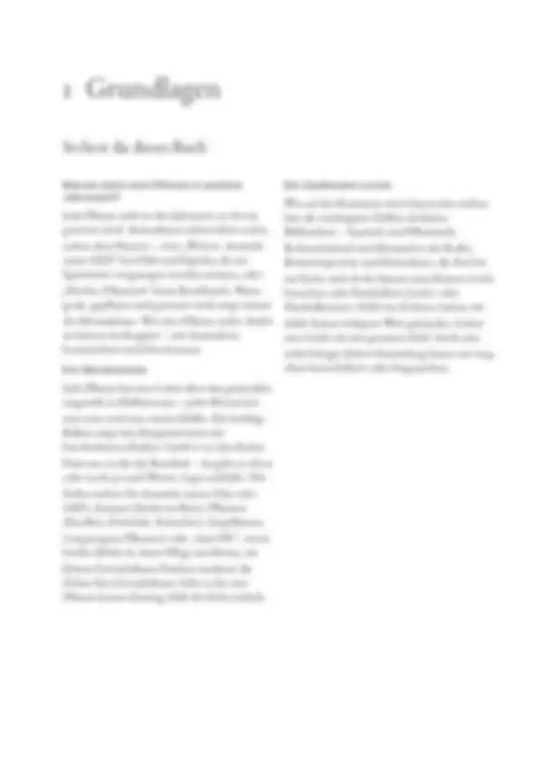
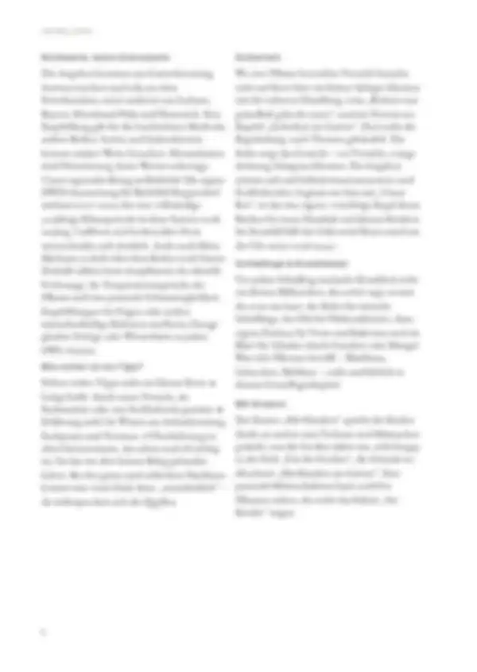
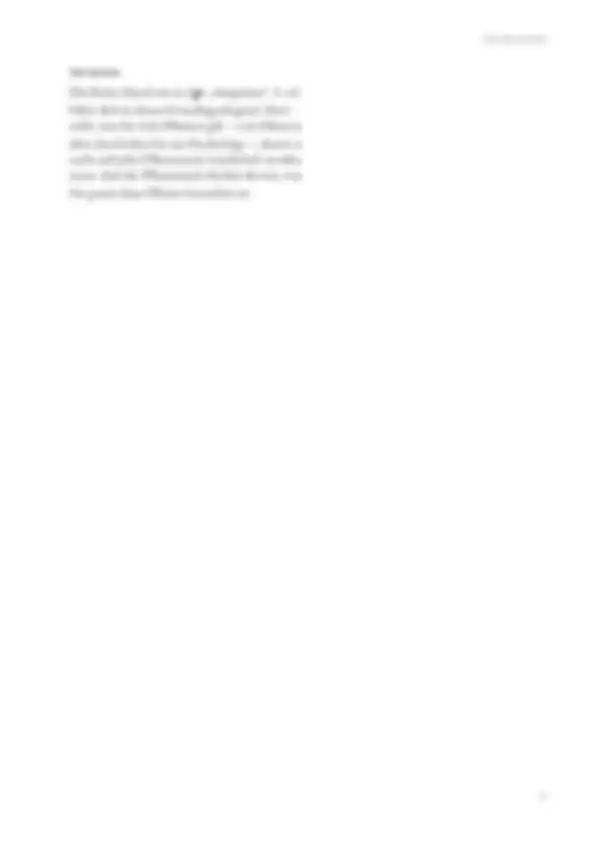

Tippe eine Quelle an, um zu sehen, wo sie verwendet wird – oder tippe auf einen Bereich der Seite.
9 Quellen dieser Abschnitt
Original · abgerufen am 26.10.2026 · ● belegtVerwendet in: Richtwerte, keine Grenzwerte
Original · abgerufen am 28.10.2026 · ● belegtVerwendet in: Richtwerte, keine Grenzwerte
Original · abgerufen am 28.10.2026 · ● belegtVerwendet in: Richtwerte, keine Grenzwerte
Original · abgerufen am 28.10.2026 · ● belegtVerwendet in: Richtwerte, keine Grenzwerte
Original · abgerufen am 28.10.2026 · ● belegtVerwendet in: Richtwerte, keine Grenzwerte
Original · abgerufen am 28.10.2026 · ◐ ErfahrungVerwendet in: Richtwerte, keine Grenzwerte
Original · abgerufen am 28.10.2026 · ◐ ErfahrungVerwendet in: Richtwerte, keine Grenzwerte
Original · abgerufen am 26.10.2026 · ● belegtVerwendet in: Sicherheit
Original · abgerufen am 26.10.2026 · ● belegtVerwendet in: Sicherheit
● belegt (Versuch, Fachinstitut) · ◐ Erfahrung (Beratung, Praxis) · ○ Überlieferung. Abschnitte ohne eigene Quellenangabe in den Daten zeigen die Quellen der ganzen Seite („Seite allgemein“).